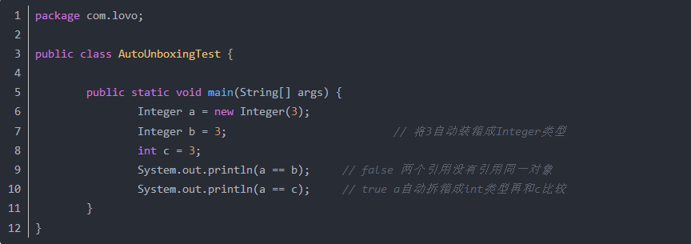
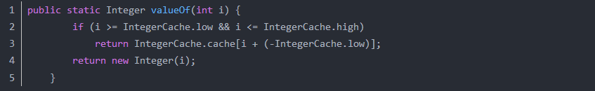
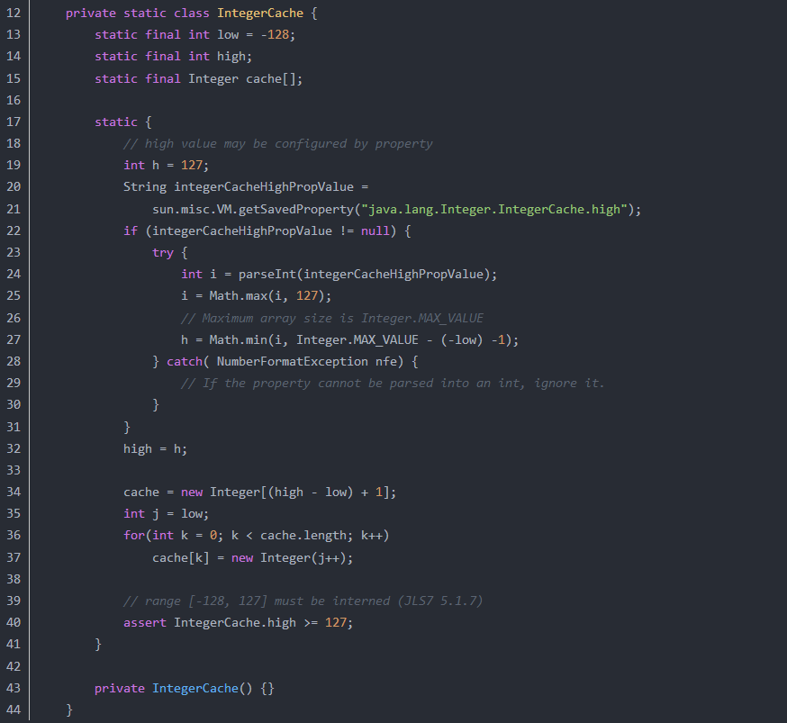
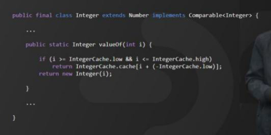
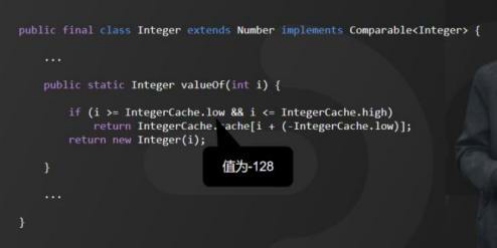
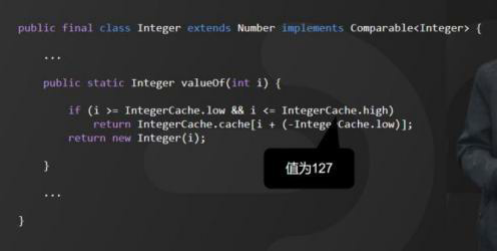

基本数据类型
八种基本数据类型的大小，以及他们的封装类
| 数据类型 | 封装类 | 大小 | 默认值 |
|---|---|---|---|
| double | Double | 8位 | 0.0d |
| float | Float | 4位 | 0.0f |
| long | Long | 8位 | 0L |
| int | Integer | 4位 | 0 |
| short | Short | 2位 | (short)0 |
| byte | byte | 1位 | (byte)0 |
| char | Character | 2位 | null\u0000 |
| boolean | Boolean | -- | false |
boolean 占几个字节
- 如果 boolean 变量在栈上，那么它占用一个栈单元（32-bits）
- 如果在堆上，那么就跟 JVM 的实现有关了
- 在 Oracle 的 JVM 实现，boolean[] 中每个元素占用一个字节（8-bits）
Java数据类型
- 基本数据类型(内置类型)；
- 扩展数据类型 。
java基本类型八种：
boolean、char(16bit)、byte(8bit有符号)、short(16bit有符号)、int(32bit有符号)、long(64bit有符号)、float(32bit)、double(64bit). Java里面整数长度固定，且没有提供无符号整型。
内置类型也称作基本类型(Primitive Types)，是扩展类型的基础。
所有的扩展类型(包括Java核心库和用户自定义类型)都是通过基本类型扩展而来的，这些类型是我们描述对象最基本的方式。比如：判断是否使用boolean；衡量大小、长度使用各种整型(包括short, int, long)和浮点数(float和double)；表达字符使用char；而处理二进制数据块使用byte。
char型变量中能不能存贮一个中文汉字?为什么?
能，因为Java在内部使用UTF8
字符型常量和字符串常量的区别
1. 形式上: 字符常量是单引号引起的一个字符字符串常量是双引号引起的若干个字符
2. 含义上: 字符常量相当于一个整形值( ASCII 值),可以参加表达式运算字符串常量代表一个地址值(该字符串在内存中存放位置)
3. 占内存大小字符常量只占2 个字节字符串常量占若干个字节(至少一个字符结束标志) (注意：char 在Java 中占两个字节)
自动装箱与拆箱
装箱：将基本类型用它们对应的引用类型包装起来；
拆箱：将包装类型转换为基本数据类型；
java 中 int char long 各占多少字节数
- short 2个字节
- int 4个字节
- long 8个字节
java int 与 integer 的区别
Java的基本数据类型有哪些？
byte，8bit char，16bit short，16bit int，32bit float，32bit long，64bit double，64bit
boolean，只有两个值：true、false，可以使⽤用 1 bit 来存储
| 简单类型 | boolean | byte | char | short | Int | long | float | double |
|---|---|---|---|---|---|---|---|---|
| 二进制位数 | 1 | 8 | 16 | 16 | 32 | 64 | 32 | 64 |
| 包装类 | Boolean | Byte | Character | Short | Integer | Long | Float | Double |
为什么不能用浮点型表示金额？
由于计算机中保存的小数其实是十进制的小数的近似值，并不是准确值，所以，千万不要在代码中使用浮点数来表示金额等重要的指标。
建议使用BigDecimal或者Long来表示金额。
了解Java的包装类型吗？为什么需要包装类？
Java 是一种面向对象语言，很多地方都需要使用对象而不是基本数据类型。比如，在集合类中，我们是无法将 int 、double 等类型放进去的。因为集合的容器要求元素是 Object 类型。
为了让基本类型也具有对象的特征，就出现了包装类型。相当于将基本类型包装起来，使得它具有了对象的性质，并且为其添加了属性和方法，丰富了基本类型的操作。
自动装箱和拆箱
Java中基础数据类型与它们对应的包装类见下表：
| 原始类型 | 包装类型 |
|---|---|
| boolean | Boolean |
| byte | Byte |
| char | Character |
| float | Float |
| int | Integer |
| long | Long |
| short | Short |
| double | Double |
装箱：将基础类型转化为包装类型。拆箱：将包装类型转化为基础类型。
当基础类型与它们的包装类有如下几种情况时，编译器会自动帮我们进行装箱或拆箱：
赋值操作（装箱或拆箱）
进行加减乘除混合运算（拆箱）进行>,<,==比较运算（拆箱）
调用equals进行比较（装箱）
ArrayList、HashMap等集合类添加基础类型数据时（装箱）
示例代码：
Integer x = 1; // 装箱调⽤ Integer.valueOf(1)
int y = x; // 拆箱调⽤了X.intValue()
下面看一道常见的面试题：
Integer a = 100; Integer b = 100;
System.out.println(a == b);
Integer c = 200; Integer d = 200;
System.out.println(c == d);
输出：
true
false
为什么第三个输出是false？看看 Integer 类的源码就知道啦。
public static Integer valueOf(int i) {
if (i >= IntegerCache.low && i <= IntegerCache.high)
return IntegerCache.cache[i + (-IntegerCache.low)];
return new Integer(i);
}
会调用 调⽤Integer.valueOf(200) 。而从Integer的valueOf()源码可以看到，这里的实现并不是简单的new Integer，而是用IntegerCache做一个cache。
private static class IntegerCache {
static final int low = -128;
static final int high;
static final Integer cache[];
static {
// high value may be configured by property
int h = 127;
String integerCacheHighPropValue =
sun.misc.VM.getSavedProperty("java.lang.Integer.IntegerCache.high");
if (integerCacheHighPropValue != null) {
try {
int i = parseInt(integerCacheHighPropValue);
i = Math.max(i, 127);
// Maximum array size is Integer.MAX_VALUE
h = Math.min(i, Integer.MAX_VALUE - (-low) -1);
} catch( NumberFormatException nfe) {
// If the property cannot be parsed into an int, ignore it.
}
}
high = h;
}
...
}
这是IntegerCache静态代码块中的一段，默认Integer cache 的下限是-128，上限默认127。当赋值100给Integer时，刚好在这个范围内，所以从cache中取对应的Integer并返回，所以a和b返回的是同一个对象，所以==比较是相等的，当赋值200给Integer时，不在cache 的范围内，所以会new Integer并返回，当然==比较的结果是不相等的。
int 型几个字节？
int 型占 4 个字节。
int、char、long 各占多少字节数
int\float 占用 4 个字节，
short\char 占用 2 个字节，
long 占用 8 个字节，
byte/boolean 占用 1 个字节
基本数据类型存放在栈里，包装类栈里存放的是对象的引用，即值的地址，而值存放在堆里。
int 与 integer 的区别
Integer 是 int 的包装类，int 则是 java 的一种基本数据类型，Integer 变量必须实例化才能使用，当 new 一个 Integer 时，实际是生成一个指向此对象的引用，而 int 是直接存储数据的值，Integer 默认值是 null，而 int 默认值是 0
String 转换成 integer 的方式及原理
1）parseInt(String s)内部调用 parseInt(s, 10)默认为 10 进制 。
2）正常判断 null\进制范围，length 等。
3）判断第一个字符是否是符号位。
4）循环遍历确定每个字符的十进制值。
5）通过*=和-=进行计算拼接。
6）判断是否为负值返回结果。
String 是最基本的数据类型吗?
不是。
Java中的基本数据类型只有8个：byte、short、int、long、float、double、char、boolean；
除了基本类型（primitive type）和枚举类型（enumeration type），剩下的都是引用类型（reference type）。
float f=3.4;是否正确?
不正确。
3.4是双精度数，将双精度型（double）赋值给浮点型（float）属于下转型（down-casting，也称为窄化）会造成精度损失，因此需要强制类型转换float f =(float)3.4; 或者写成float f =3.4F;。
<font style="color:#CF1322;">short s1 = 1; s1 = s1 + 1;</font>有错吗？<font style="color:#CF1322;">short s1 = 1; s1 += 1;</font>有错吗？
对于short s1 = 1; s1 = s1 + 1;由于1是int类型，因此s1+1运算结果也是int 型，需要强制转换类型才能赋值给short型。
而short s1 = 1; s1 += 1;可以正确编译，因为s1+= 1;相当于s1 = (short)(s1 + 1);其中有隐含的强制类型转换。
int 和Integer 有什么区别?
Java是一个近乎纯洁的面向对象编程语言，但是为了编程的方便还是引入不是对象的基本数据类型，但是为了能够将这些基本数据类型当成对象操作，Java为每一个基本数据类型都引入了对应的包装类型（wrapper class），int的包装类就是Integer，从JDK 1.5开始引入了自动装箱/拆箱机制，使得二者可以相互转换。
Java 为每个原始类型提供了包装类型：
原始类型: boolean，char，byte，short，int，long，float，double
包装类型：Boolean，Character，Byte，Short，Integer，Long，Float，Double

补充：最近还遇到一个面试题，也是和自动装箱和拆箱相关的，代码如下所示：

如果不明就里很容易认为两个输出要么都是true要么都是false。首先需要注意的是f1、f2、f3、f4四个变量都是Integer对象，所以下面的==运算比较的不是值而是引用。装箱的本质是什么呢？当我们给一个Integer对象赋一个int值的时候，会调用Integer类的静态方法valueOf，如果看看valueOf的源代码就知道发生了什么。

IntegerCache是Integer的内部类，其代码如下所示：

简单的说，如果字面量的值在-128到127之间，那么不会new新的Integer对象，而是直接引用常量池中的Integer对象，所以上面的面试题中f1==f2的结果是true，而f3==f4的结果是false。越是貌似简单的面试题其中的玄机就越多，需要面试者有相当深厚的功力。
char 型变量中能不能存贮一个中文汉字?为什么?
char类型可以存储一个中文汉字，因为Java中使用的编码是Unicode（不选择任何特定的编码，直接使用字符在字符集中的编号，这是统一的唯一方法），一个char类型占2个字节（16bit），所以放一个中文是没问题的。
补充：使用Unicode意味着字符在JVM内部和外部有不同的表现形式，在JVM内部都是Unicode，当这个字符被从JVM内部转移到外部时（例如存入文件系统中），需要进行编码转换。所以Java中有字节流和字符流，以及在字符流和字节流之间进行转换的转换流，如InputStreamReader和OutputStreamReader，这两个类是字节流和字符流之间的适配器类，承担了编码转换的任务；对于C程序员来说，要完成这样的编码转换恐怕要依赖于union（联合体/共用体）共享内存的特征来实现了。
如何将字符串转换为基本数据类型？
调用基本数据类型对应的包装类中的方法parseXXX(String)或valueOf(String)即可返回相应基本类型。
如何将基本数据类型转换为字符串？
一种方法是将基本数据类型与空字符串（””）连接（+）即可获得其所对应的字符串；
另一种方法是调用String 类中的valueOf(…)方法返回相应字符串。
自动装箱拆箱
- 自动装箱：基本数据类型->对象类型
- 自动拆箱：对象类型->基本数据类型
13.两个Integer对象比较大小，为什么100等于100,1000不等于1000？
前几天，有位小伙伴向我反馈，在维护代码过程中，出现了一个莫名其妙的问题。明明上线之后程序跑得还好好的，可程序上线运行一段时间之后，所有，代码没有做任何修改，发现运行结果和期望值恰好相反。因为涉及到金额造成了比较大的损失，最后，这位小伙伴还被公司辞退了，大家可以来评论一下，这位小伙伴背的这个锅值不值？
1、业务场景
大家来看，他的代码大致是这样写的：

一般情况下，a 和 b 都输入 100 的时候，返回为true，但当a 和 b 都输入 1000 的时候，返回为 false。按照正常逻辑理解，100 等于等于 100，那 1000 为什么不等于等于 1000 呢？ 这位同学，百思不得其解。于是，这位同学，还特意写了一段测试代码

这到底是什么原因呢？ 我们对照 Integer 的源码来进行分析：
2、源码分析
我摘取了 Integer 的源码片段，它有一个 valueOf()的方法：

我们可以看到，Integer 源码中的 valueOf()方法做了一个条件判断，其中 IntegerCache.low 的值为-128，

IntegerCache.high 的值为 127。

也就是说如果目标值在-128～127 之间，会直接从 cache 数组中取值，否则就会新建对象。
这里又有人会问了，那为什么默认是-128 - 127，怎么不是-200 - 200 或者是其他值呢？ 那 JDK 为何要这样做呢？

在 Java API 中是这样解释的：
Returns an Integer instance representing the specified int value. If a new Integer instance is not required, this method should generally be used in preference to the constructor Integer(int), as this method is likely to yield significantly better space and time performance by caching frequently requested values. This method will always cache values in the range -128 to 127, inclusive, and may cache other values outside of this range
大致意思是：
-128～127 的数据在 int 范围内是使用最频繁的，为了减少频繁创建对象带来的内存消耗，这里其实是用到了享
元模式，以提高空间和时间性能。
在 JDK 中，这样的应用不止 int，我给小伙伴们整理了一个表格，表格中的其他类型也都应用了享元模式，也就是说对数值做了缓存，只是缓存的范围不一样，具体如表中所示：

我需要这张表的小伙伴可以私信我，以上就是关于Integer 对象比较大小的分析，听懂了的小伙伴，请关注点个
赞，下次不迷路。
更新: 2023-10-19 16:47:54
原文: https://www.yuque.com/joyo/interview/ardt0x